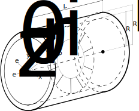

Linear cylinder plane strain example
In this example a hollow cylinder submitted to an internal pressure $p_i$ as shown in diagram depicted below is considered. The length of the cylinder is $L_z $ m and the internal and external radious are $R_i$ and $R_e$, respectively.
A cylindrical system of coordinates is defined considering the unitary vectors ($e_r$, $e_\theta$, $e_z$). The material employed is isotropic and homogeneous with elasticity modulus $E$ MPa and Poisson's ratio $\nu$. The boundary condition on the stress tensor $\textbf{T}$ is given by the radial pressure on the internal surface:
\[\textbf{T}(r=R_i, \theta, z)\left[-e_r\right] =p_i e_r\;\;\quad\forall\; (\theta,z) \\ \textbf{T}(r=R_e, \theta, z)\left[e_r\right]=\textbf{0} \;\;\quad\forall\; (\theta,z)\]
and the plane strain boundary conditions imposed to the displacement field are:
\[ \mathbf{\mathit{u}}_z(r, \theta, z=0)=0\;\;\quad\forall\; (r,\theta) \\ u_z(r, \theta, z=L_z)=0\;\;\quad\forall\ (r,\theta) \\\]
Analytic solution
The solution displacement field is extracted from chapter 4 of (Timoshenko and Goodier, Theory of Elasticity, 3rd edition). The Navier's equation, imposing no temperature variation, no volumetric forces, and considering a radial dispalcement field leads to:
\[ \nabla (\nabla . \textbf{u}(r,\theta,z) ) = 0 \]
Due to the symmetry of the problem $\mathbf{\mathit{u_{\theta}}} = 0 $ and also $\mathbf{ \mathit{ \textbf{u} (r,\theta,z) } } = \mathbf{ \mathit{ \textbf{u}(r,z) } } $. Thus, according to the boundary conditions stated above $\mathit{u_z(r,z)=0}$ and the radial displacements field $\mathit{u_r(r)}$ only varies with $r$. Thereafter by imposing the boundary conditions stated above and substituting ($E$, $\nu$) into Lamé parameters ($\lambda=\frac{ E\nu }{(1 + 2\nu )(1 - 2\nu )}$ and $\mu=\frac{ E\nu }{(1 + 2\nu )}$) we obtain:
\[ u_r(r) = Ar + \dfrac{B}{r} \\ A = \dfrac{(1+\nu)(1-2\nu)R_i^2p_i}{E(R_e^2-R_i^2)}, \quad B = \dfrac{(1+\nu)R_i^2R_e^2p_i}{E(R_e^2-R_i^2)}\]
Numerical solution
Before defining the structs, the workspace is cleaned, the ONSAS directory is added to the path and scalar geometry and material parameters are defined:
clear all, close all
% add path
addpath( genpath( [ pwd '/../../src'] ) ) ;
% scalar parameters
E = 1e6 ; nu = 0.3 ; p = 30e3 ; L = .75 ; Re = 0.15 ; Ri = 0.1 ;MEBI parameters
materials
The constitutive behavior of the material considered is isotropic linear elastic. Since only one material is considered, the structs defined for the materials contain only one entry:
materials.hyperElasModel = 'linearElastic' ;
materials.hyperElasParams = [ E nu ] ;elements
In this plane model, three kinds of elements are used: triangle for the solid, edges to add pressure loads and nodes to set additional boundary conditions for the numerical resolution. Since three kinds of elements are used, the struct has length 3:
elements(1).elemType = 'node' ;
elements(2).elemType = 'edge' ;
elements(2).elemCrossSecParams = L ;
elements(3).elemType = 'triangle';
elements(3).elemTypeParams = 2 ;
elements(3).elemCrossSecParams = L ;where elemCrossSecParams field sets the thickness of the edge and elemTypeParams sets the plane strain triangle element.
boundaryConds
Three BCs are considered, one corresponding to a load and two for displacements. The first two BCs constrain displacements in $x$ and $y$ global directions respectively:
boundaryConds(1).imposDispDofs = [1] ;
boundaryConds(1).imposDispVals = [0] ;
boundaryConds(2).imposDispDofs = [3] ;
boundaryConds(2).imposDispVals = [0] ;then the third BC corresponds to the pressure. It is introduced in local coordinates so the first entry is along the edge (tangent) and the second towards the normal vector obtained by rotating the tangent vector 90 degrees in global axis $z$:
boundaryConds(3).loadsCoordSys = 'local' ;
boundaryConds(3).loadsTimeFact = @(t) t ;
boundaryConds(3).loadsBaseVals = [ 0 p ] ;initialConds
Any non-homogeneous initial conditions are considered, thereafter an empty struct is set:
initialConds = struct();Mesh
The mesh can be read from the msh file. However, if any changes to the mesh are desired, the .geo file can be edited and the msh file can be re-generated using GMSH.

The element properties are set using labels into GMSH follwing the MEBI nomenclature. First triangle elements have linear elastic material so entry $1$ of the materialṣ struct is assigned. Then for both node and edge elements any material is set. Next displacement boundary conditions are assigned to the element, since the problem is modeled into $x-y$ plane, a constrain to avoid rotation along $z$ is necessary. This is done fixing $y$ and $x$ displacements (using boundaryConds(1) and boundaryConds(2) as labels) on points 2 3 4 5. Finally the internal pressure is applied on the edge elements linked with curves from one to four (Circles 1-4 in Figure). In accordance with the orientation of the curve set in GMSH, the normal vector obtained in local coordinates is $e_r$ so the internal pressure is assigned using boundaryConds(3). Once the mesh is created is read using:
[ mesh.nodesCoords, mesh.conecCell ] = meshFileReader( 'ring.msh' ) ;Analysis parameters
The Newton-Raphson method is employed to solve 2 load steps. The ratio between finalTime and deltaT sets the number of load steps used to evaluate boundaryConds(3).loadsTimeFact function:
analysisSettings.methodName = 'newtonRaphson' ;
analysisSettings.stopTolIts = 30 ;
analysisSettings.stopTolDeltau = 1.0e-12 ;
analysisSettings.stopTolForces = 1.0e-12 ;
analysisSettings.finalTime = 1 ;
analysisSettings.deltaT = .5 ;Output parameters
otherParams.problemName = 'linearPlaneStrain' ;
otherParams.plotsFormat = 'vtk' ;The ONSAS software is executed for the parameters defined above and the displacement solution of each load(time) step is saved in matUsmatrix:
[matUs, loadFactorsMat] = ONSAS( materials, elements, boundaryConds, initialConds, mesh, analysisSettings, otherParams ) ;Verification
The numerical and analytic solutions are compared at the final load step for the internal and external surface (since all the elements on the same surface have the same analytic solution):
% internal surface analytic solution
A = ( p * (1+nu)*(1-2*nu)*Ri^2 ) / ( E*(Re^2-Ri^2) ) ;
B = ( p * (1+nu)*Ri^2*Re^2 ) / ( E*(Re^2-Ri^2) ) ;
analyticValRi = A*Ri + B/Ri ;
% internal surface numerical solution
dofXRi = 1 ;
numericalRi = matUs( dofXRi, end ) ;
% external surface analytic solution
analyticValRe = A*Re + B/Re ;
% external surface numerical solution
dofXRe = (8-1)*6+3 ;
numericalRe = matUs( dofXRe , end ) ;The numerical solution is verified:
analyticCheckTolerance = 1e-3 ;
verifBoolean = ( ( numericalRi - analyticValRi ) < analyticCheckTolerance ) && ...
( ( numericalRe - analyticValRe ) < analyticCheckTolerance )Plot
The numerical and analytical solution for the internal and external surface are plotted:
%plot parameters
lw = 2.0 ; ms = 11 ; plotfontsize = 10 ;
figure, hold on, grid on
%internal surface
plot( matUs(dofXRi,:), loadFactorsMat(:,3) , 'ro' , 'linewidth', lw,'markersize',ms )
plot( linspace(0,analyticValRi,length(loadFactorsMat(:,3) ) ) , loadFactorsMat(:,3), 'k-', 'linewidth', lw,'markersize',ms )
%internal surface
plot( matUs(dofXRe,:), loadFactorsMat(:,3) , 'ro' , 'linewidth', lw,'markersize',ms )
plot( linspace(0,analyticValRe,length(loadFactorsMat(:,3)) ) , loadFactorsMat(:,3), 'k-', 'linewidth', lw,'markersize',ms )
labx = xlabel('Displacement [m]'); laby = ylabel('\lambda(t)') ;
legend('Numeric','Analytic','location','East')
set(gca, 'linewidth', 1.2, 'fontsize', plotfontsize )
set(labx, 'FontSize', plotfontsize); set(laby, 'FontSize', plotfontsize) ;
print('output/verifLinearCylinderPlaneStrain.png','-dpng')Finally the deformed configuration is illustrated:

```